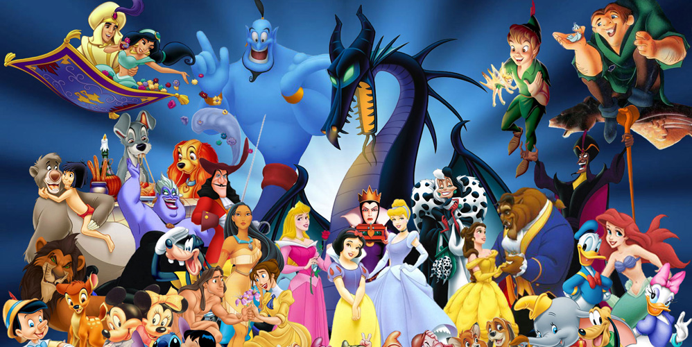

Correct answers0
Incorrect answers0
Fun facts
Part of the reason Disney's movies were so successful was that the animators were amazing
dedicated to getting things right. To make the cuddly characters in his films as realistic as
possible, he often took in live animals in the studio. During the production for Snow White and the Seven Dwarfs was taken
live rabbits, skunks and horses in for the animators to study. Likewise, two fawns roamed
around during the production of Bambi